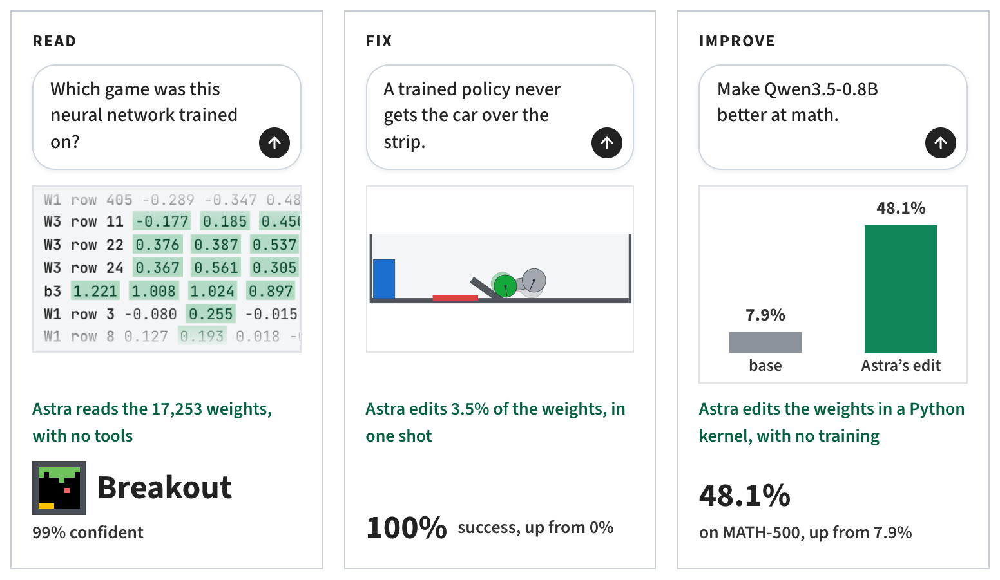
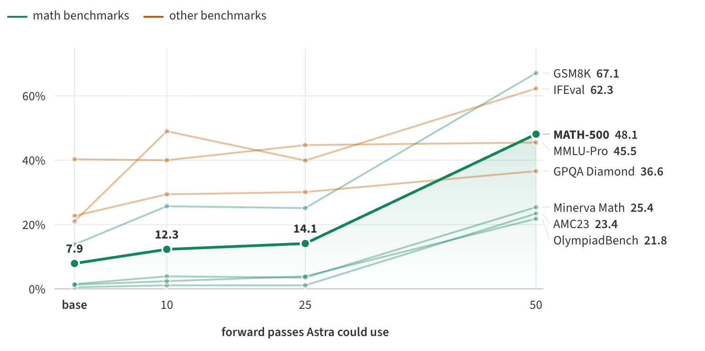

Modelos Generativos Profundos · MIA · ICAI · 2026-2027
Un modelo transforma texto en texto. El harness es todo lo demás: el bucle, las herramientas, los permisos y el contexto.
DeepSeek Harness · Codex · Claude Code · Qwen3.5-4B en la DGX
Repositorio: github.com/kendrickcetina/harnesses · Tutorial: tutorial.ipynb
| Llamada al modelo | Harness | |
|---|---|---|
| Qué es | Una función: entrada → salida | Un programa que llama al modelo en bucle |
| Estado | Ninguno. Cada llamada empieza de cero | Historial, sesiones, memoria, compactación |
| Tools | El modelo pide una tool (JSON) | El harness la ejecuta y devuelve el resultado |
| Acciones | No toca nada | Lee y escribe ficheros, ejecuta comandos |
| Control | Lo decide tu código | Lo decide el modelo, dentro de límites |
| Seguridad | — | Permisos, sandbox, aprobaciones |
| Contexto | Lo que tú envías | System prompt, tools, instrucciones del repo, resultados |
Código: mini_harness.py (un harness en ~100 líneas) · server/toolcalls.py (cómo un texto se convierte en tool call)
for step in range(max_steps):
msg = model(messages, tools)
if not msg.tool_calls:
return msg.content
for call in msg.tool_calls:
messages += run(call)
AGENTS.md, CLAUDE.md)Código: MiniHarness.run · Tutorial, sección 3
| Grafo de agente (LangGraph) | Harness (DeepSeek Harness, Codex, Claude Code) | |
|---|---|---|
| Qué es | Una librería para programar el flujo: nodos, aristas y estado | Un programa listo para usar: bucle, tools y entorno |
| Quién decide el camino | Tú, al dibujar el grafo (aristas fijas o condicionales) | El modelo, en cada vuelta de un bucle genérico |
| Unidad de trabajo | Nodo: una función o una llamada al LLM | Paso: llamada al modelo + ejecución de tools |
| Estado | Un esquema que defines tú, con checkpoints | El historial de la conversación, sesiones, compactación |
| Tools | Las que declares tú | Ya trae shell, ficheros, web, skills y MCP |
| Entorno | Ninguno: sandbox y permisos los pones tú | Sandbox, permisos, aprobaciones, workspace |
| Predecible | Alto: rutas explícitas, se testean nodo a nodo | Menor: el camino lo decide el modelo |
| Úsalo para | Procesos conocidos con ramas: RAG con verificación, flujos con revisión humana | Tareas abiertas: código, documentos, análisis |
No se excluyen. El agente ReAct de LangGraph es un grafo de dos nodos (modelo ⇄ tools):
el bucle de un harness, sin el entorno. Y un harness puede ser un nodo de un grafo
(por ejemplo, un nodo que llama a codex exec o a dsh.run_task).
En ARCA: la fase 3 (RAG) es un flujo fijo, un grafo; la fase 4 (ReAct) es un harness mínimo. · LangGraph
| DeepSeek Harness | Codex CLI | Claude Code | |
|---|---|---|---|
| Autor · licencia | DeepSeek · MIT | OpenAI · Apache-2.0 | Anthropic · propietario |
| Lenguaje | TypeScript (SDK Python) | Rust | TypeScript |
| API que habla | Anthropic Messages | OpenAI Responses | Anthropic Messages |
| Idea | Todo es un plugin | Agente de código con sandbox | Agente de código y general |
| Tools nativas* | 3 (mínimo) · 25 (completo) | ~19 | >15 · 4 con --tools |
| System prompt* | 0,15k · 2,6k caracteres | ~20,7k caracteres | ~6,9k (con 4 tools) |
| Extensión | Plugins, skills, MCP | MCP, skills | MCP, skills, hooks, plugins |
| Instalación aquí | uv sync | scripts/install_clis.sh | scripts/install_clis.sh |
* Medido con nuestro servidor (outputs/traffic/) en nov. 2026: dsh 0.2.1rc2, codex-cli 0.162, Claude Code 2.1. Cambia con cada versión.
Código: dsh.py · clis.py · traffic.py
Publicado en agosto de 2026, en developer preview. Sobre Cordis: modelos, tools, skills, sesiones, sandbox y bucle son plugins que se cambian con un patch YAML.
sdk-minimalbash · read_image · working_directory
sdk (completo)read write edit glob grep bash
job_* skill todo_write exit_plan_mode
subagent subagent_fork send_message workflow
*_goal web_search web_fetch …
Trae skills de Office (office-docx, -xlsx, -pptx) y puede
lanzar Codex o Claude Code como subagentes.
- id: session-log-deepseek
disabled: true
- insert:
- id: mcp-lab
name: '@deepseek-ai/dsh-mcp-client'
config:
serverName: lab
transport: stdio
command: .venv/bin/python
args: [-m, harness_lab.tools.mcp_server]
dsh.run_task("Crea harness.docx ...")
Código: dsh.py · write_patch, run_task · github.com/deepseek-ai/deepseek-harness
dsh.run_task(...)DeepSeekHarnessbash, …) y las nuestras por MCP: mcp__lab__create_word_document, …sdk-minimal (3 tools) cabe en el contexto de un modelo de 4B; sdk para tareas grandes.uv sync, se controla desde el notebook y emite eventos
(tool/call, tool/result) que mostramos en vivo.Código: dsh.py · run_task · Tutorial, sección 4
| Problema | Qué hicimos | Dónde |
|---|---|---|
| DeepSeek Harness espera la API de DeepSeek | Su adaptador habla Anthropic Messages: apuntamos base_url al servidor local, que implementa
/v1/messages y /v1/messages/count_tokens (también en streaming) |
anthropic_messages.py |
| Qwen no devuelve JSON, escribe texto | El servidor convierte <tool_call><function=…> en bloques tool_use,
y los tool_result del harness en mensajes que entiende la plantilla de Qwen |
toolcalls.py |
| Queremos tools propias | El patch inserta el plugin dsh-mcp-client con nuestro servidor MCP lab (stdio) |
write_patch · mcp_server.py |
| Telemetría hacia DeepSeek | El patch desactiva session-log-deepseek y plugin-package-inventory-deepseek |
write_patch |
| Un modelo de 4B se pierde fácilmente | System prompt corto (DSH_SYSTEM_PROMPT), contexto de 32k (DSH_CONTEXT_WINDOW),
perfil sdk-minimal por defecto, thinking desactivado (reasoning_effort="off") |
run_task |
No ensuciar el repo ni el $HOME |
El harness trabaja en workspace/; sesiones en .dsh_home/<perfil>
(cada perfil guarda las sesiones en un formato distinto) |
run_task |
| Ver qué hace el harness | describe() convierte los eventos en líneas legibles; el servidor guarda cada petición |
describe · traffic.py |
| Está en developer preview | Versión fijada: deepseek-harness-sdk==0.2.1rc2 |
pyproject.toml |
Tests sin GPU: test_harnesses_e2e.py (DeepSeek Harness de verdad + MCP + Word con un modelo simulado)
lab · los tres harnesses lo arrancan por stdio
create_word_document · read_word_document · list_workspace · compare_checkpoints<tool_call>…; el servidor lo convierte en JSON para cada API.Código: server/app.py · anthropic_messages.py · openai_responses.py · tools/mcp_server.py
@server.tool()
def create_word_document(
filename: str, markdown: str,
title: str = "",
) -> str:
"""Create a Word (.docx) document
from Markdown text."""
path = docx_tools.create_word_document(
filename, markdown, title)
return f"Saved {path}"
.docx con python-docx: títulos, listas, negritas, tablas.mcp__lab__create_word_document.workspace/.Código: tools/docx_tools.py · Tests: test_harnesses_e2e.py (dsh + MCP + Word, sin GPU)
| Usa… | Cuando | Ejemplos |
|---|---|---|
| Llamada directa | Una entrada, una salida. Necesitas control, latencia baja, coste predecible | Clasificar, extraer con structured output, resumir |
| Workflow fijo | Los pasos se conocen de antemano | RAG: recuperar → generar → citar (ARCA fase 3) |
| Harness | Tarea abierta, varios pasos, hay que mirar el resultado y decidir | Arreglar un test, analizar un repo, preparar un informe Word |
Relación con ARCA: la fase 4 (bucle ReAct) es un harness escrito a mano.
Aparte · no forma parte de la práctica de harnesses
Mejorar un modelo ya entrenado editando directamente los números de sus matrices de pesos: sin gradientes, sin datos de entrenamiento y sin reentrenar.

Los autores dan los pesos a un LLM de frontera (GPT-6 Astra) y le piden tres cosas: leer qué hace una red, arreglar una que falla y mejorar Qwen3.5-0.8B en matemáticas. Aquí nos interesa la tercera.
Figuras: Takehi, Teoh, Zhang, Khattab (MIT CSAIL, 2 nov. 2026), rikiyat.github.io/blog/weight-space-programming
Un LLM es una pila de capas, y cada capa son matrices de números. Qwen3.5-0.8B tiene 24 capas
y 800 millones de pesos. La edición toca dos matrices: la down_proj de la
MLP de las capas 15 y 19.
W[:, cols] = W[:, cols] − u (uᵀ W[:, cols])
u es una dirección (un vector de 1024) del flujo residual. Los autores
la relacionan con los bucles: cuanto más escribe el modelo en u, más repite.u (en gris). Todo lo
demás que escribe esa neurona no cambia.
Eje x: cuántas pasadas hacia delante pudo usar Astra para diagnosticar.
El fallo: 85 de sus primeras 96 respuestas de práctica llegaban al límite de 32.768 tokens. El modelo entraba en bucle y no llegaba a responder.
| Pasadas | MATH-500 | Al límite |
|---|---|---|
| Base | 7,9 % | 93,0 % |
| 10 | 12,3 % | 87,2 % |
| 25 | 14,1 % | 86,4 % |
| 50 | 48,1 % | 33,1 % |
Quitar el bucle mejora todo lo que dependía de terminar la respuesta, también lo que no es matemáticas: IFEval sube de 21,0 % a 62,3 %.
Técnica de base: quitar un comportamiento borrando una sola dirección de los pesos (Arditi et al., 2024, arXiv:2406.11717).
Regla práctica: editar pesos quita un obstáculo que tapa una capacidad que el modelo ya tiene. Para enseñarle algo nuevo hace falta SFT, GRPO o RAG.
Vuestro Qwen3-0.6B con LoRA (SFT + GRPO) de la fase 1 calcula dosis pediátricas por peso. En el análisis de fallos veis que se equivoca a menudo en problemas como este:
Amoxicilina 50 mg/kg/día repartida en 3 tomas. Niño de 14 kg. ¿Cuántos mg por toma? Correcto: 50 × 14 = 700 mg/día → 700 / 3 = 233 mg por toma Modelo: 50 × 14 = 700 → <answer>700 mg</answer> (no divide entre tomas)
Primero hay que clasificar los fallos. Solo algunos se pueden atacar editando pesos:
| Fallo (visto en train) | ¿Weight-space? | Por qué |
|---|---|---|
Se queda en bucle o no cierra <answer> | Sí | Es el caso del post. |
| Da la dosis diaria como dosis por toma | Candidato | El mismo error en muchos problemas: puede haber una dirección detrás. |
| Confunde mg con mL de la suspensión | Candidato | Solo si se repite siempre de la misma forma. |
| Multiplica mal (14 × 50 = 750) | Poco probable | Errores repartidos, como en Gemma. |
| No sabe la dosis por kg del fármaco | No | Falta conocimiento: más datos de SFT, o RAG (fase 3). |
Hay dos modelos. El editor es un modelo de frontera que decide qué
pesos cambiar: gpt-6-astra (OpenAI), con razonamiento max. El
modelo editado es Qwen3.5-0.8B. Un script propio (el driver) los conecta.
mensaje = PROMPT_DE_LA_TAREA
while pasadas_usadas < 50:
# el editor: un modelo de frontera
respuesta = codex exec --model gpt-6-astra \
-c model_reasoning_effort=max
# (tools de Codex apagadas)
bloque = el único bloque de la respuesta
if bloque es ```python:
salida = kernel.run(bloque)
# CPU, sobre los pesos; sin GPU
if bloque es ```forward:
salida = servidor_gpu(bloque)
# Qwen genera o lee; gasta 1 pasada
mensaje = salida
entregar los tensores de /work/edited
| Kernel | Python persistente, CPU. load,
save_edit, tok. Hasta 300 ejecuciones. |
| Pasadas | 50. Generate: Qwen responde hasta 512 problemas, original y editado a la vez, y devuelve la diferencia de aciertos. Teacher-forced: lee 1.024 textos y devuelve activaciones. |
| Datos | Train de GSM8K (7.469) y MATH (7.275). Nunca los benchmarks. |
| Prohibido | Gradientes, ejecutar el modelo en el kernel, internet, tocar embeddings o la norma final. |
| Coste | 158 turnos, 80 ejecuciones de Python, 20 horas. |
Logs completos (prompt, cada turno, el código y la edición): github.com/RikiyaT/lm_understand-logs/exp8_math
Copiad el montaje de los autores y cambiad solo lo imprescindible. El editor tiene que ser un modelo de frontera: ningún Qwen pequeño (tampoco el de 4B de este repositorio) sabe diagnosticar pesos.
| Autores | Vosotros | |
|---|---|---|
| Editor | gpt-6-astra, razonamiento max |
El modelo de frontera más fuerte al que tengáis acceso, con el razonamiento al máximo. Por API o por su CLI (Codex, Claude Code), con sus tools apagadas. |
| Driver | Script propio: un bloque por turno | Igual. Lo escribís vosotros: llama al editor, ejecuta su bloque y le devuelve la salida. |
| Modelo editado | Qwen3.5-0.8B | Qwen3-0.6B con vuestro LoRA fusionado: se editan los pesos finales. |
| Pasadas | Servidor vLLM en GPU | Vuestro servidor en la GPU de la DGX, con el mismo protocolo que rlm/evaluate.py. |
| Datos | Train de GSM8K y MATH | Vuestro train.jsonl de dosis, corregido con vuestro verificador. |
| Prompt | "Hazlo mejor en matemáticas" | El prompt de los autores, cambiando modelo, datos y métrica: "mejóralo en dosis por peso". |
| Presupuesto | 10, 25 y 50 pasadas | 50. Con 10 o 25 los autores casi no mejoraron. |
| Evaluación | Benchmarks que el editor nunca vio | Vuestro test.jsonl, sin enseñárselo al editor, y GSM8K como control. |
Punto de partida: el prompt de los autores en exp8_math/runs/p50c/turns/t001/prompt.txt. Contad con el coste: unos 160 turnos de un modelo de frontera.